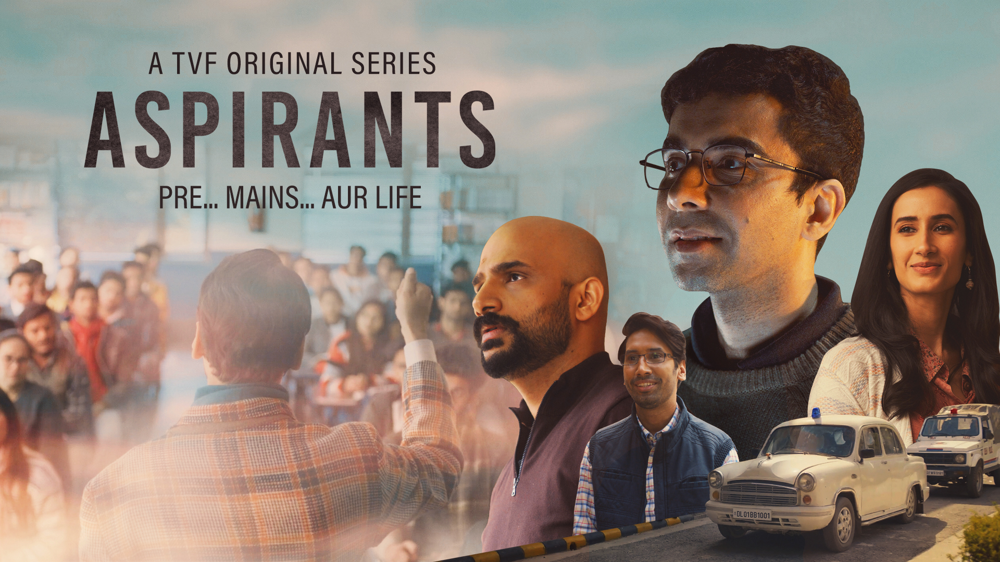
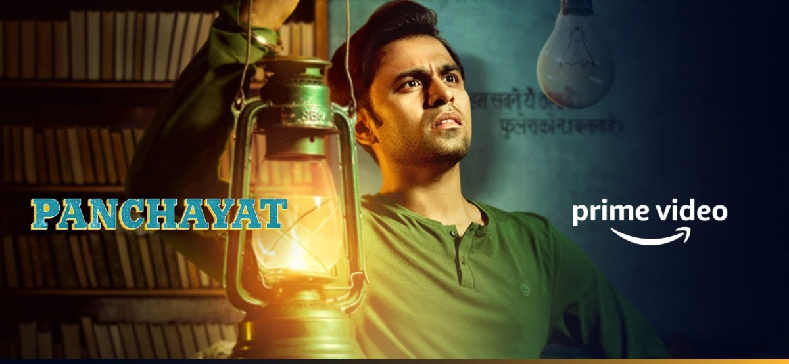
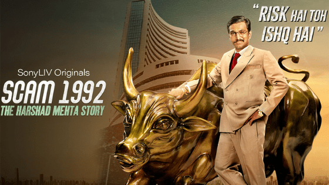
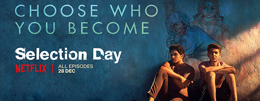
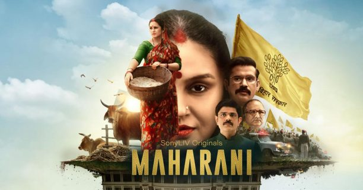

5 Best Life Changing Motivational Indian Web Series
Posted On:29-6-21
By:Prashant Kumar Jha
With the emerging times, when everything from education to entertainment is
available on one click, we can’t deny the fact that cinema and digital media is
playing a vital role in our lives. Since the COVID- 19 pandemic, came the concept of
Lockdown which shook the world. At these tough times, when we cannot even meet our
friends and loved ones, online streaming platforms such as Netflix, Amazon Prime
etc. didn’t let us feel bored and are constantly coming with amazing contents. We do
entertain our minds watching these web series and films but sometimes few of them
hit us hard with their relatable content that touches our life. We will talk about
the Top 5 Life Changing and Motivational Indian Web Series that are most liked by
viewers till date and a must watch for everyone.
Aspirants- TVF

The show focuses on a group of young men who want to take the Union Public Service
Commission (UPSC) examinations and have only dream of becoming an IAS officer and
serving the nation. The premise of the show is divided into the past and present,
which offers a glimpse into the characters’ lives. Naveen Kasturia plays the lead
role of a man whose desperation for cracking UPSC forces him to make several
personal and professional sacrifices. It’s one of those shows that will motivate you
to keep believing in yourself even if there’s no end in sight.
Panchayat- Amazon Prime

Jitendra Kumar plays the role of Abhishek, an engineering graduate who would rather
prepare for his CAT exams than
take up the job of a secretary at a village panchayat office. However, when he does
start working at the humble
government office, his perception about village life slowly changes. The show
doesn’t try to preach, instead subtly
alludes to the fact that you can find hope even when you think you have hit rock
bottom.
Scam 1992- Sony LIV

Recently released and hit web series, Scam 1992 is simply the best web series for
entertainment as well as
motivation. This Hansal Mehta directed show is inspired by the life story of Harshad
Mehta, an Indian stockbroker.
The gripping music, acting and storyline is applauded by critics as well. The cast
of this web series includes
Pratik Gandhi, Anjali Barot, Shreya Dhanwanthary and more among others.
Selection Day- Netflix

An Indian sports drama web series which tells the story of an overbearing father who
wants his sons to succeed.
Radha and Manju, both are teenagers and talented cricketers as well. Things start to
get complicated when a brother
meets his older brother’s rival, during Mumbai U-19 trials. The cast includes Rajesh
Tailang, Yash Dholye, Mahesh
Manjrekar, Ratna Pathak Shah and more among others.
Maharani- Sony LIV

After being shot, Bheema Babu (Sohum Shah) resigns as the Chief Minister of Bihar
and appoints his dutiful wife and
homemaker, Rani Bharti (Huma Qureshi), as his successor. For the longest time, all
she cares about is her home,
family and pets. But, she eventually turns out to be the real leader by eradicating
corruption and shows how a
determined person can achieve everything no matter what their roots are.